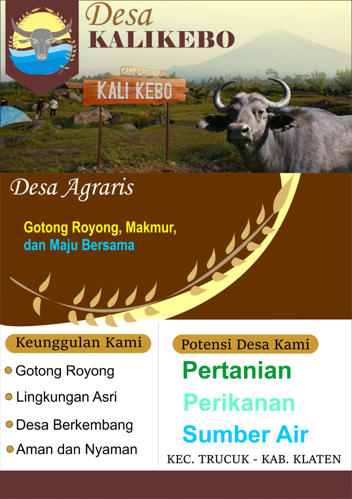

PROFIL DESA KALIKEBO
Kecamatan Trucuk, Kabupaten Klaten
Home
Profil
Galeri
Unduhan
Profil Desa 🪪
Desa Kalikebo merupakan desa yang berada di Kecamatan Trucuk, Kabupaten Klaten.
Desa ini memiliki potensi pada bidang pertanian, perikanan dan sumber daya air.
